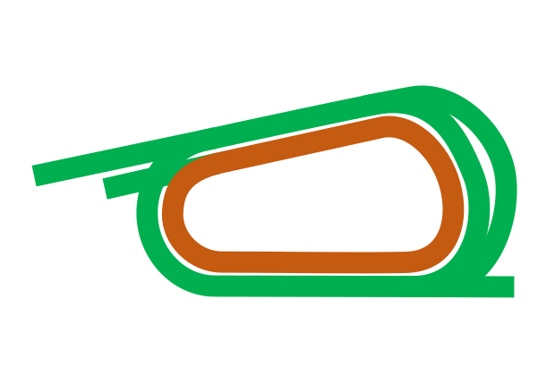

LAB 横展開第1弾／架空18頭／未承認
原SVGの芝帯を1m間隔で検証中です。開始ボタンは安全確認後に有効になります。
実況 ＋ 全体図
0m / 1400m実況

0.00.0
600m 通過—
ゴール速報
スタート前共通RaceSimEngine
全体図／うまぽっと原SVG
うまぽっと原図・距離目盛りなし右回り外1400m
全馬の時計と推定着差
| 順位 | 馬番 | 馬名 | タイム | 前馬との差 | 1着との差 |
|---|
出典：うまぽっと 京都競馬場コース素材。 実レースを再生するものではなく、JRA予想や買い目には影響しません。